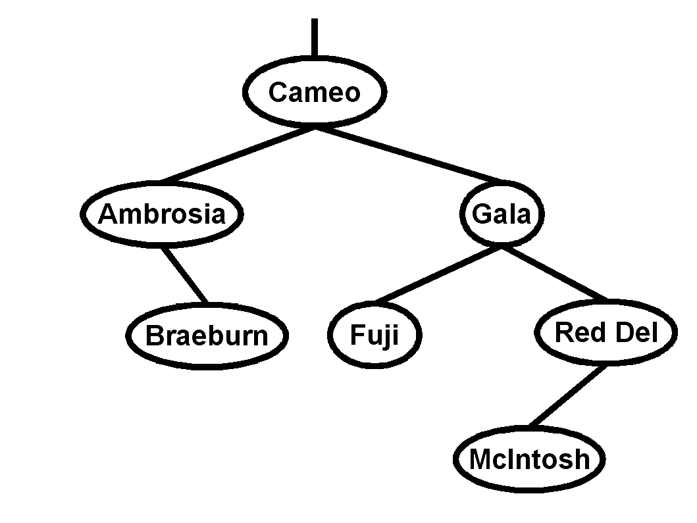

-
Name the five steps to top-down
problem solving as described in the text. [5]
| ___________ |
___________ |
___________ |
___________ |
___________ |
-
Describe the five program structure/flow
abstractions in the text. [5]
| ___________ |
___________ |
___________ |
___________ |
___________ |
- Fill in the blank [20]:
- "Computers are t________s, and computing scientists are t___________s."
- The ___________________ function is used to determine
how many LOCs are used to store an item in memory.
- A procedure that returns a value is called a _______________ procedure.
- Express 4AH in decimal: _________, octal: ____________, and
binary: ________________________
- Before using the value of a variable for the first time in a program,
we need to ________________________ and ___________________________ it.
- The four loop structures in Modula-2 are
_____________________, _____________________,
_____________________, and _____________________.
- A new type made from a sequence of consecutive values of an
existing type is called a _______________________ of the host type.
- A procedure that invokes itself is called a
______________________ procedure.
- The function that evaluates natural logarithms on real numbers is found
in the ________________________ standard library.
- True or False (circle one): The word FUNCTION is a legal identifier.
- 4GB = _______________ kilobit. (You may express it as a power of 2.)
-
In the space provided, evaluate each of the following four Boolean
expressions, or if they give an error, indicate why. [8]
- 'X' >= 'A' AND 'X' <= 'Z'
- (5 / 12 = 2) OR NOT FALSE AND FALSE
- (1#1)&~(1/1<1)
- (6 REM 4 > 2) AND (2 REM 0 = 2)
-
Name the 3 standard I/O libraries used to
open/close files, and the differences among them.
Name at least two procedures from each library. [9]
-
What is wrong with this loop, intended to count down from 100 by threes?
How would you fix it?
You may fix the code directly in the space below. [4]
MODULE CountDown;
VAR
counter : INTEGER;
BEGIN
counter := 100;
REPEAT
statement sequence;
DEC (counter, 3);
UNTIL counter = 0;
END CountDown.
-
Rewrite the following FOR loop code snippet as a general LOOP.
Don't worry about the rest of the module (IMPORT, VAR, etc.). [5]
FOR idx := 0 TO LENGTH (name) DO
WriteCard (ORD (name [idx]));
END;
-
Tell me everything you know about Modula-2 records. [5]
-
In your own words, describe what inheritance means in object-oriented
programming. [5]
-
Write a complete declaration for each of the following data types:
[11]
- A string type:
- A type defining three exceptions,
goodEx, badEx, and uglyEx:
- A type for only the lowercase letters:
- A type for an m by n matrix of booleans:
- A doubly-linked (bidirectional) list of reals:
-
Draw a diagram illustrating a doubly-linked (bidirectional) list
with three nodes. Include all relevant pointers and indicate
if any are NIL. [4]
-
On a separate paper,
write a Modula-2 procedure to delete a node from a doubly-linked
list. A complete module is not necessary. You may assume any necessary
IMPORTs have been done. You may assume type declarations given above.
Pseudocode/design is not necessary to show, but is good for partial credit.
[10]
You may assume the user won't ask to delete the first or last node
(you can ignore the tricky special cases at the end-conditions)
-
Fill in the following grid with moves for a knight's tour.
The first two positions are filled in for you.
You may want to do your scratch work separately
and copy just your final solution here.
Partial credit for showing backtracking work.
-

Consider the following binary search tree [13]:
- Which node is the root?
__________________
- What is the depth of the tree?
____________
- Name all the leaves in this tree:
- Do a post-order traversal of this binary tree.
- Using the algorithm discussed in class, insert a node,
"Cortland", into this BST and diagram the result.
- From the original BST, delete the node, "Gala", using the
algorithm discussed in class, and diagram the result.